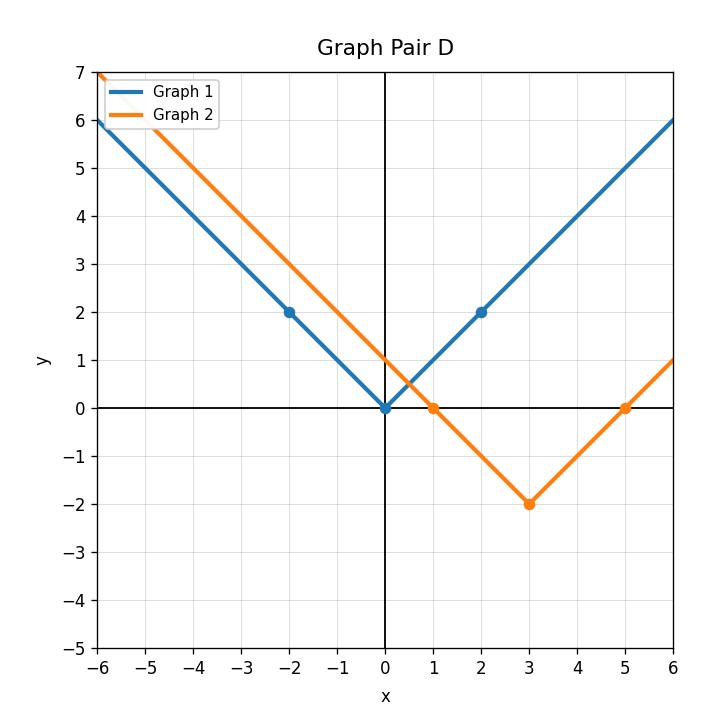
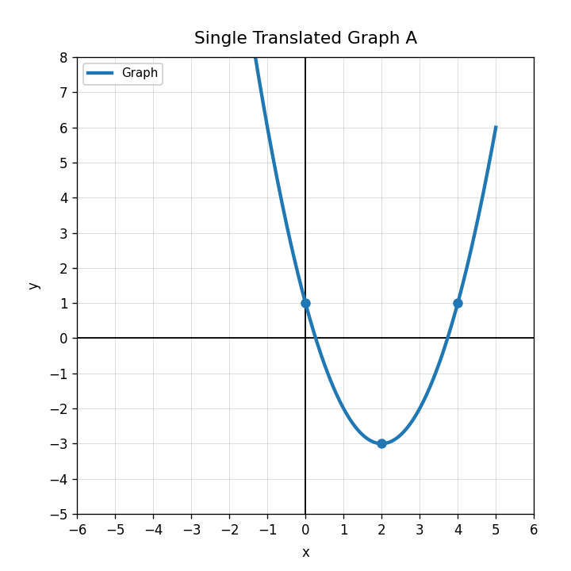
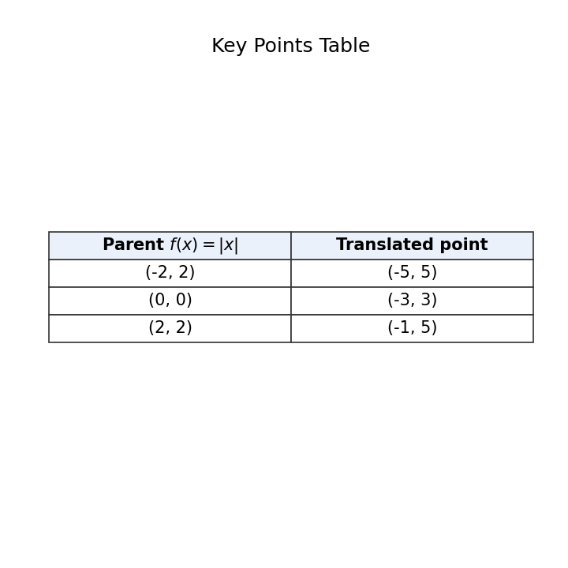

Which expression represents translating $f(x)$ downward 5 units?
For $g(x)=f(x+2)$, describe the translation.
Use Graph Pair D. Describe the translation from Graph 1 to Graph 2.

Use Single Translated Graph A. Write a possible equation if the parent is $f(x)=x^2$.

Use the key points table. Describe the translation from the parent absolute-value function.

Complete the table for $g(x)=|x+3|+1$.
| $x$ | -5 | -3 | -1 | 0 | 2 |
|---|---|---|---|---|---|
| $g(x)$ |
Explain why $g(x)=f(x)+4$ translates every output of $f(x)$ upward by 4 units.
Create two translated versions of $f(x)=|x|$. Explain how the equations show the translations.